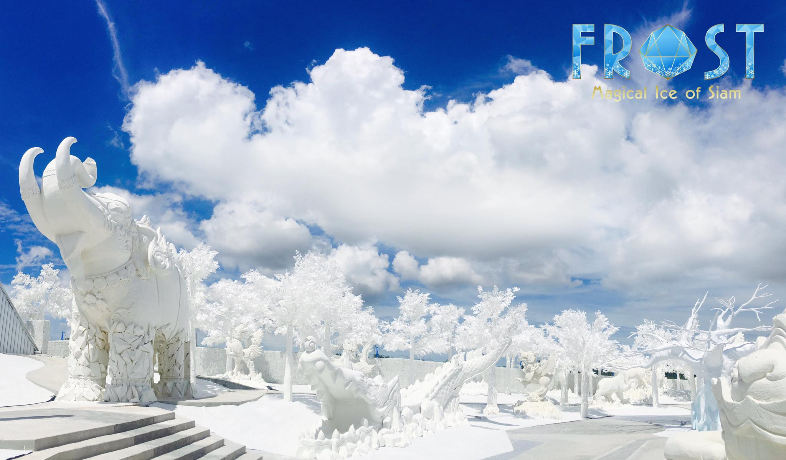

CHONBURI
จังหวัดชลบุรี เป็นดินแดนที่ปรากฏขึ้นมาในหน้าประวัติศาสตร์ตั้งแต่สมัยทวารวดี ขอม และสุโขทัย แต่เดิมเป็นเพียงเมืองเกษตรกรรม และชุมชนประมงเล็กๆ หลายเมือง กระจัดกระจายกันอยู่ห่างๆ โดยในทำเนียบศักดินาหัวเมืองสมัยอยุธยากำหนดให้ชลบุรีเป็นเมืองชั้นจัตวา ส่วนแผนที่ไตรภูมิก็มีชื่อตำบลสำคัญของชลบุรีปรากฏอยู่ เรียงจากเหนือลงใต้ คือ เมืองบางทราย เมืองบางปลาสร้อย เมืองบางพระเรือ (ปัจจุบันคือบางพระ) และเมืองบางละมุง แม้ว่าจะเป็นเพียงเมืองเล็กๆ แต่ก็อุดมไปด้วยทรัพยากรทั้งบนบก และในทะเล มีการทำไร่ ทำนา ทำสวน และออกทะเลมาแต่เดิม นอกจากนี้ยังมีการติดต่อกับชาวจีนที่ล่องเรือสำเภาเข้ามาค้าขายกับกรุงสยามด้วย

Frost Magical Ice of Siam - สถานที่ท่องเที่ยวในพัทยาที่ให้คุณสัมผัสประสบการณ์เมืองน้ำแข็งสุดพิเศษ